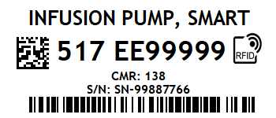

Complete technical guide to the in-browser visual label previews, real-time Zebra cart printer monitoring, and stateless BarTender Print Engine integration designed specifically for VA enterprise security compliance.
In the Veterans Affairs (VA) national network environment, local SQL Server instances
(specifically the default BarTender System Database MSSQL$BARTENDER) are strictly restricted.
Past integration approaches that relied on the BarTender System Database suffered from connection failures,
ghost database queries, and "Bartender Print Result Failure" errors.
doc.PrintSetup.UseDatabase = false;, every label preview and direct print operation is completely
decoupled from SQL Server. All label fields (asset tag, serial number, description, CMR, and RFID EPC tag)
are injected directly as SubStrings (Named Data Sources).
Furthermore, all development is isolated on git branch Bartender_API_Inegration.
Production branch main remains completely untouched and stable.
The diagram below illustrates how client browsers, AJAX endpoints, the BarTender Print Engine, and the physical Zebra RFID printers interact:
va_tagteam_scan.aspx
va_excel_print.aspx
va_print_admin.aspx
Below is an actual live label preview generated by the BarTender Print Engine from
C:\idash_prints\AW_Std_Small.btw. Notice how the 2D DataMatrix barcode,
the standard 1D linear barcode, the EPC RFID inlay icon, and all text fields are rendered with
crisp precision:

When the .btw file is opened in memory, the engine automatically extracts all dynamic variables:
| SubString Name | Asset Data Field | Sample Rendered Value |
|---|---|---|
lblname |
Asset Barcode | 517 EE99999 |
lbldescription |
Equipment Description | INFUSION PUMP, SMART |
lblsn |
Serial Number (text3) | SN-99887766 |
lbleil |
CMR / EIL (text8) | 138 |
lblrfidtag |
RFID EPC Tag | E28011902000216503837493 |
The field tagging team has immediate visual feedback at their fingertips:
BarTender: 7 Printers). Hovering displays
all discovered printers and ports (e.g. Std_Small (Zebra ZD500R on USB003)).
.btw file exists, renders the output with sample data,
and enumerates all discovered Named Data Sources. This allows admins to instantly detect broken templates or missing variables.
equipment.xlsx
can click 👁 Preview Label in the toolbar to inspect how the computed asset name, description,
and serial number will appear on physical media before starting a large batch print job.
All client-side interactions query api/BarTenderHandler.ashx. Session authentication is required.
?action=printers?action=fields&template=C:\...btw.btw template and returns an array of all discovered Named Data Sources (SubStrings).?action=preview{ Success: true, ImageBase64: "...", DiscoveredFields: [...] }.?action=print{
"template": "c:\\idash_prints\\AW_Std_Small.btw",
"fields": {
"lblname": "517 EE99999",
"lbldescription": "INFUSION PUMP, SMART",
"lblsn": "SN-99887766",
"lbleil": "138",
"lblrfidtag": "E28011902000216503837493"
}
}
By default in Windows, the IIS worker process (w3wp.exe) runs under a restricted non-interactive
Application Pool identity. When attempting to launch BarTender's GUI print engine (bartend.exe) inside IIS,
Windows blocks desktop heap allocation.
We solved this by implementing a hybrid architecture with zero external software requirements:
http://localhost:5160/preview/ that runs in the interactive
user session or as a Scheduled Task (using the same credentials as Run_Bypass_Spooler.ps1).
BarTenderApiHelper.cs queries this service seamlessly.
LocalSystem with Load User Profile = True), BarTenderApiHelper.cs automatically
renders previews completely in-process.
# Terminal 1: BarTender Bypass Print Spooler (polls printjob table)
powershell -ExecutionPolicy Bypass -File C:\inetpub\wwwroot\iDash\printing\Run_Bypass_Spooler.ps1
# Terminal 2: BarTender Preview Microservice (serves instant UI previews)
powershell -ExecutionPolicy Bypass -File C:\inetpub\wwwroot\iDash\printing\Run_Preview_Service.ps1